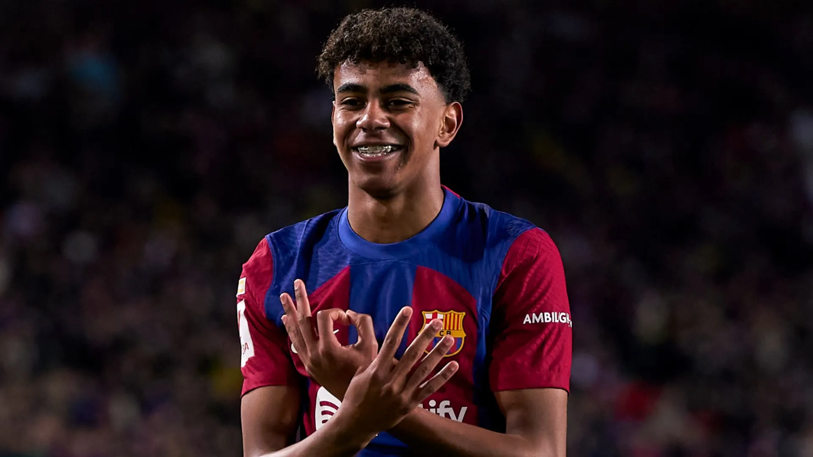

Every time Lamine Yamal scores, he holds his hands up, spelling out 3-0-4 as he celebrates. Millions watch as he displays these numbers, some not knowing the significance behind it. To him, the three numbers represented the neighborhood he was raised in, the sacrifices his family made, and a promise to never forget where he came from.
Although Lamine Yamal Nasraoui Ebana was born on July 13, 2007, in Esplugues de Llobregat, near Barcelona, his childhood was mostly spent in the neighborhood of Rocafonda, whose postal code ends in 304. Yamal is one of the most talented and youngest stars to play on the biggest stage, making his Barcelona first-team debut in April 2023 at only 15 years old after developing at their famous youth academy, La Masia.
Despite being several years younger than his teammates and competitors, Yamal displayed a level of confidence and ability that made people turn their heads. By the age of 16, he was playing regularly for Barcelona and his national team, Spain. At Euro 2024, he became the youngest player to appear in the tournament and later went on to be the youngest to score at the Euros.
Yamal’s story is not just extraordinary because of his immense talent but also because of his journey through the efforts of his family and community.
Yamal is the son of Mounir Nasraoui, whose family came from Morocco, and Sheila Ebana, who came from Equatorial Guinea. When he was only 3 years old, his parents divorced. Yamal’s childhood was divided into two families: Rocafonda with his father and Granollers with his mother. Although he was raised in two separate households, both families supported his dreams despite their limited financial resources.
His multicultural background would later become a very important part of his identity when he chose which national team to play for; however, he stayed true to Spain, the country where he was born, raised, and trained.
Rocafonda is a neighborhood located in Mataro, a coastal city northeast of Barcelona. The area has a vibrant immigrant community with a history from North and West Africa. It has faced low household incomes and social stigma due to its financial circumstances. Rocafonda was among the lowest household incomes in Mataro, and the neighborhood did not receive the same admiration associated with Barcelona and other parts of Spain.
Although Yamal was talented and was recruited by La Masia’s scouts at an early age, the youth academy for Barcelona, his family had to make tremendous financial sacrifices to allow him to pursue his dreams. Yamal’s father sometimes had too little money left for himself because he was saving money for the train ride to take his son to training, so bars would give coffee to him for free. His journey to stardom was not supported by chauffeurs, expensive training programs, and a football network. It was built on the sacrifices of his father, the neighborhood helping to support his journey, and his parents’ unconditional love and support.
Yamal challenged this stigma, holding up the three digits of 3-0-4 when he scores, representing the final numbers of Rocafonda’s postal code, 08304. This celebration is an acknowledgment of where Yamal came from in front of millions of viewers. An area of Spain that was once underappreciated and affected by poverty and marginalization would be the centerpiece of a celebration on the biggest stage in the world.
Yamal’s appreciation of his roots has increased Rocafonda’s residents’ pride in the place they live, now proudly identifying themselves with 304. A neighborhood where once was overlooked by other parts of Spain and riddled with insecurity was single-handedly acknowledged and appreciated by a global phenomenon of the most popular sport in the world.
“Whenever he scores and raises his hands, he brings his neighborhood with him.”
Lamine Yamal may now play beneath stadium lights far from Rocafonda, but whenever he scores and raises his hands, he brings his neighborhood with him.
3. 0. 4.
References
Sources
- Reuters. “In Humble Spanish Suburb, Wonderkid Lamine Yamal Embodies Hope.” (external link)
- The Guardian. “Spain’s New Stars Lamine Yamal and Nico Williams Transform the Game — and Attitudes.” (external link)
- The Guardian. “Lamine Yamal’s Goal for the Ages Shows Best of Spain’s Generational Talent.” (external link)
- El País English. “Rocafonda, the Neighborhood That Regained Its Pride Thanks to Soccer Sensation Lamine Yamal.” (external link)
- UEFA. Lamine Yamal Player Profile and EURO Records. (external link)